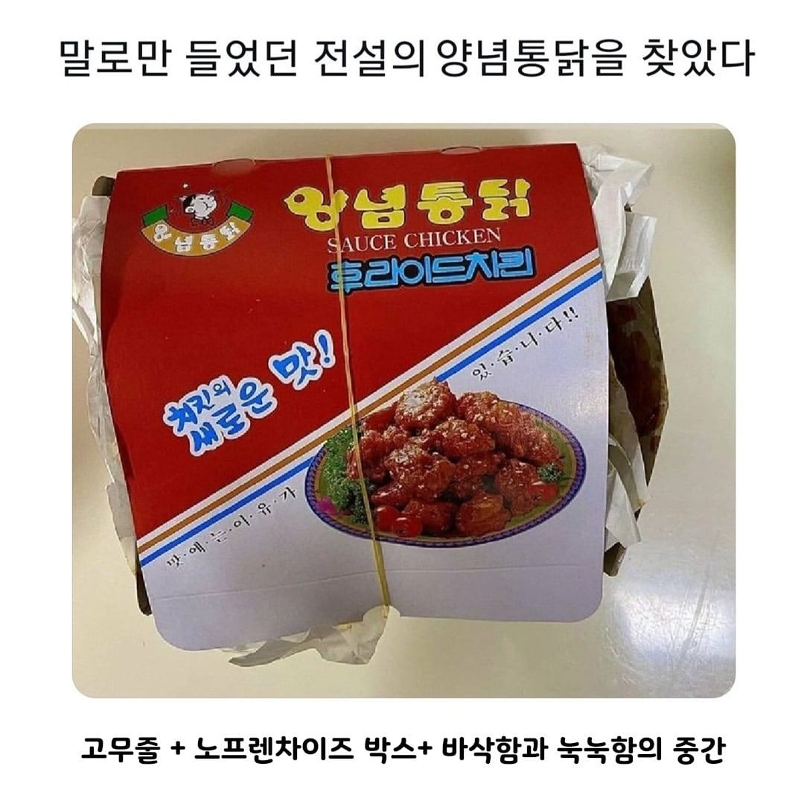
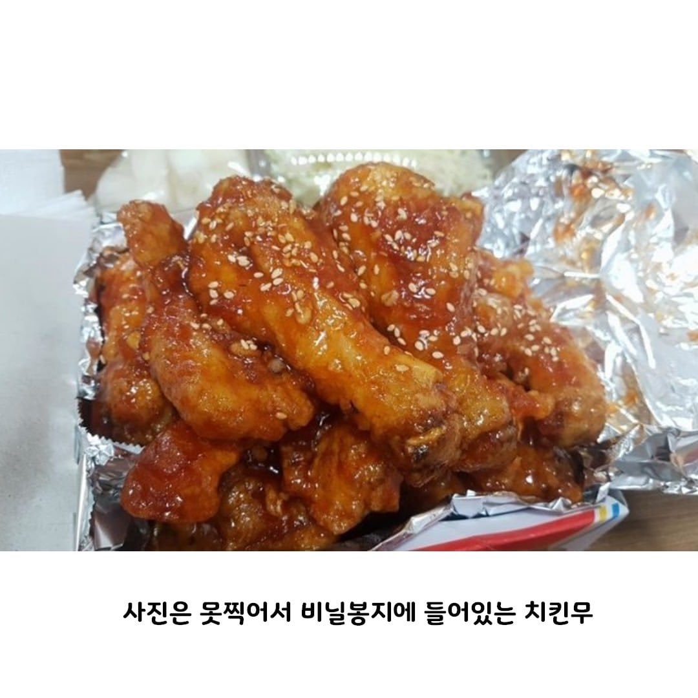
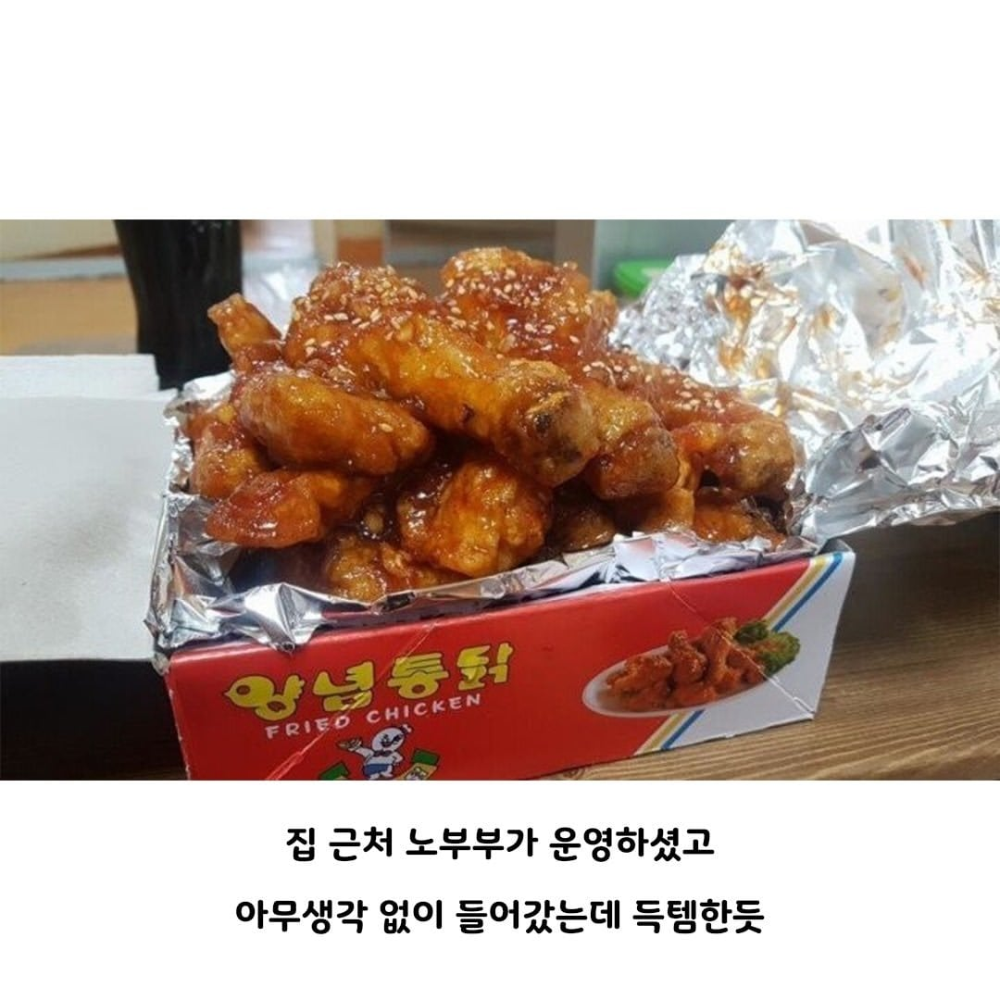
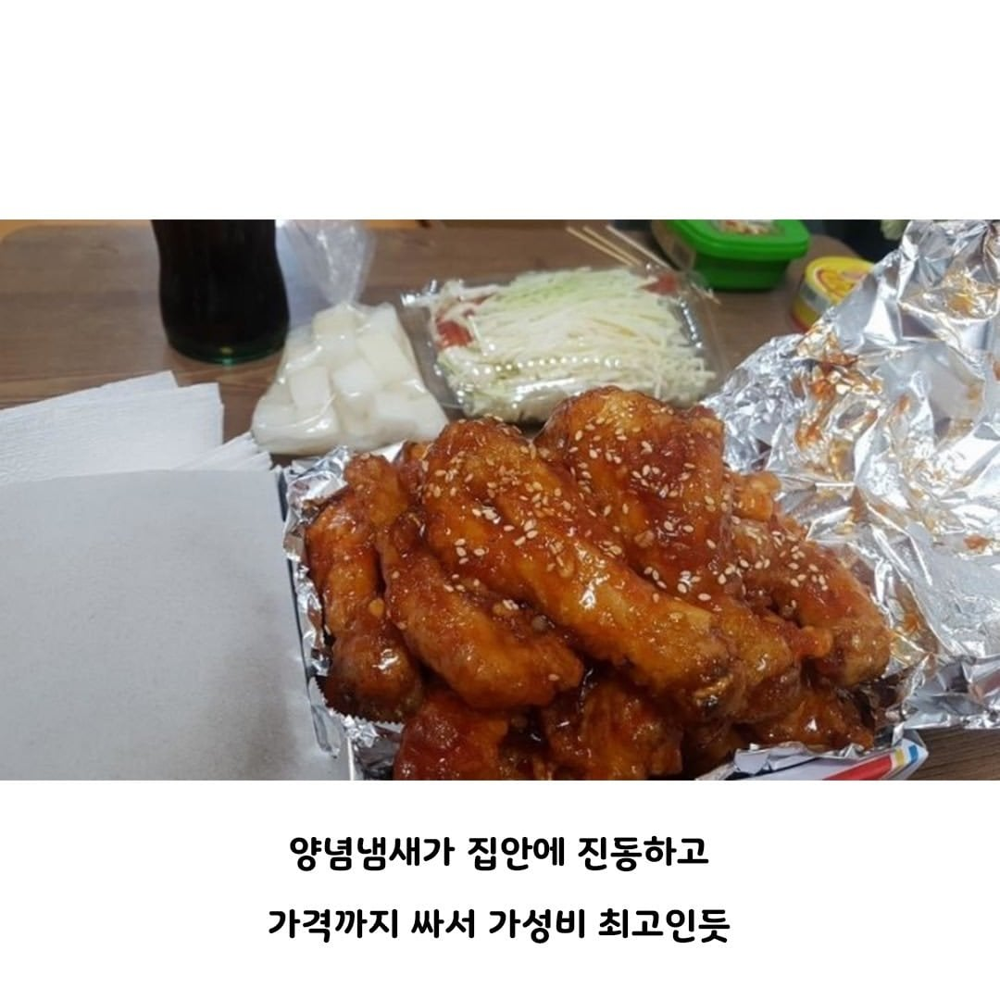
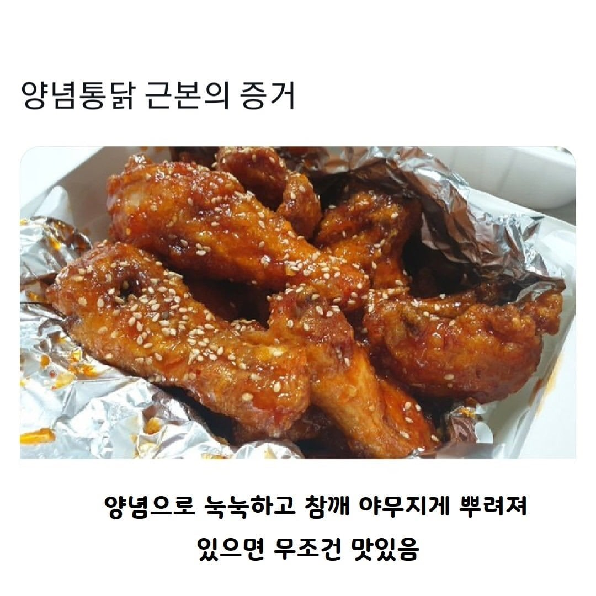

우리동네에도 족히 30년은 된듯한 치킨집이 딱 저스타일인데 ㅋㅋ
눅눅~해가지고 치킨도 양념에 푹 절어서 약간 오버쿡 되어가지고 살이 좀 빠삭해야함
인자 늙어가지고 저런 눅눅하게 절여진놈이 맛나더라
나도 치킨 먹을때 무조건 후라이드만 시켰는데 이제 반반 시키기 시작함....
어딘데 어딘데ㅠ
페리카나가 가장 유사한 맛 감성때문에 저게 더 맛있음
내가 10년전에 살던 동네 통닭집은 닭도 키우는 곳이라서
그자리에서 닭모가지 따서 튀겨주는 곳도 있었음 ㅋㅋㅋ
냄새 심하지 않음?
오히려 담백하고 속편함
염지 안한 그 닭내 너무 심하던데
잘하는집가면 안남 장사잘되서 그런가 배달도안됨 ㅋㅋㅋ
순창?
제발 저렇게 해서 다리만 팔아줘 제발 부탁이야
참깨를 땅콩 부스러기로 바꾸면 진짜 옛날스타일
와 진짜 오랜만에 본다
살아남앗다는건 강하다는것
우리동네에 세미양념통닭집 있는데 딱 저모양임
치킨의 새로운맛!(40년전 출시)
와씨 어디냐
25년 전만 해도 많았는데 겨울방학때 속초 워터피아 놀러가서 물놀이하고 페리카나 양념통닭 먹으면 개꿀맛ㅋㅋㅋ